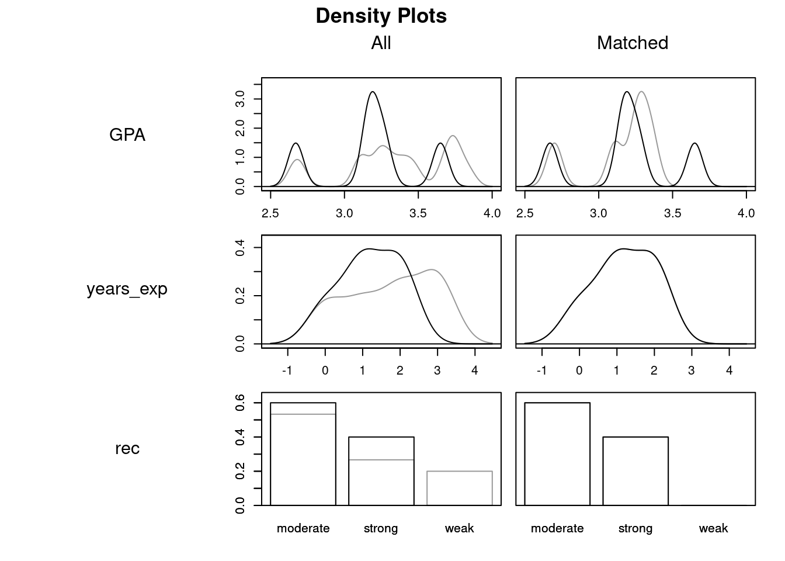
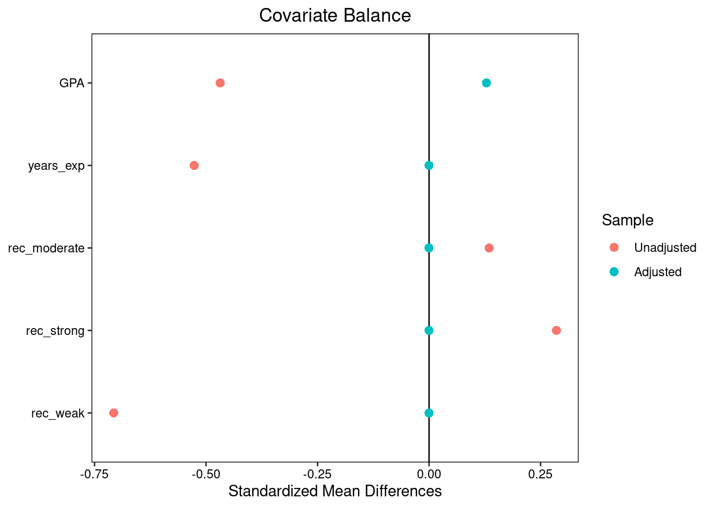

| Student | GPA | Years exp | Rec | Cal Grad | Good Job |
|---|---|---|---|---|---|
| Evelyn Fix | 3.9 | 3 | strong | yes | yes |
| Eleanor Fix | 3.9 | 3 | strong | no | no |
Causal Effects in Observational Studies
Natural experiments and matching
Causal claims without randomization
Randomized experiments are very useful for learning about causal claims; because comparison groups are guaranteed to be similar on average before the treatment is given, differences in outcomes between the groups must be the result of the treatment.
However, we frequently need to evaluate causal claims without having access to data from a randomized experiment. Today we’ll explore how to take some of the ideas important in understanding and analyzing randomized experiments and use them to make progress with data where treatment assignments are not determined by researchers. Such non-experimental studies are called observational studies, emphasizing that all researchers do is observe treatment assignments rather than making them.
Natural experiments
Do evaluators tend to favor members of the same race? In the mid-2000s two economists interested in this question, Joseph Price and Justin Wolfers, obtained data on 12 years of referee decisions from professional National Basketball Association (NBA) games. They compared the rate at which referees gave fouls to players of the same racial category (Black or non-Black) to the rate at which fouls were given to players of the opposite category.
This study aims to investigate a causal claim: for a given player in a given game, would the player’s foul rate have been different if a different referee had been assigned whose racial categorization did (or did not) match the player’s racial categorization?
If Price and Wolfers had reached an agreement with the NBA that allowed them to assign referees to games at random, they could have conducted a randomized experiment to answer this question using the ideas from the last set of notes. This did not happen; however, Price and Wolfers argue that the actual manner in which referees were assigned to games closely resemble what they would have done in their ideal hypothetical experiment:
Assignments of referees to crews are made to balance the experience of referees across games, with groups of three referees working together for only a couple of games before being regrouped. According to the NBA, assignments of refereeing crews to specific (regular season) games is “completely arbitrary” with no thought given to the characteristics of the competing teams. Each referee works 70 to 75 games each year, and no referee is allowed to officiate more than nine games for any team, or referee twice in a city within a fourteen-day period. Although these constraints mean that assignment of refereeing crews to games is not literally random, the more relevant claim for our approach is that assignment decisions are unrelated to the racial characteristics of either team.2
To back up their claim, Price and Wolfers conduct hypothesis tests for balance on a variety of covariates. Here is an excerpt from one of their balance tables. Each row gives a p-value for a test of the null hypothesis that this covariate is independent of the number of non-Black referees.
| Covariate | P-value from balance test |
|---|---|
| Year | 0.00 |
| #Black starters (home team) | 0.75 |
| #Black starters (away team) | 0.72 |
| Attendance | 0.49 |
| Home team out of contention | 0.94 |
| Away team out of contention | 0.81 |
Although the table suggests that the number of non-Black referees did vary over time (notice the .00 p-value in the first row) the other p-values are fairly large, suggesting approximate balance.
If indeed the process of assigning referees is independent of the race, team, and popularity of any particular team or player, as well as any other covariates that might be good predictors of foul rate, then each group provides a good approximation to the missing counterfactual outcome distribution for the other group, and the study can be analyzed as though it were from a truly-randomized experiment to produce a good average treatment effect estimate.
At this point the problem has been reduced to one of generalization (what does the difference in foul rates in this sample say about the true difference in counterfactual foul rates for all NBA players and games?), and Price and Wolfers use a hypothesis test to address it. They find a significant discrimination effect: on average basketball players facing an officiating referee of the same racial category enjoyed a foul rate 4% lower than when facing an officiating referee of the opposite category, and also scored 2.5% more points.3
Studies like this are often known as natural experiments (or quasi-experiments).
- Natural experiment
- A study in which researchers did not randomly assign treatment but claim that the treatment process is sufficiently independent of covariates to justify treatment effect estimation.
Similar units with different treatments
While in natural experiments we can learn about causal effects from purely observational data, only rarely are treatments we care about known to be quasi-randomly assigned as in the NBA refereeing example. More generally, we may have only amorphous knowledge of how treatment assignment occurs, or we may have compelling reasons to believe that treated and control individuals differ systematically. In this setting we need a new strategy for causal effect estimation.
Siblings
Let’s return to our example of evaluating the impact of graduating from Cal on obtaining a good job. Imagine that Cal student Evelyn Fix had a sister, Eleanor Fix. If Evelyn graduated from Cal and Eleanor did not, then we could observe this data frame.
To understand the causal effect of college for Evelyn, we need to know the counterfactual value of the ‘Good Job’ variable in the setting where she didn’t attend college. Could we use Eleanor to stand in for Evelyn’s counterfactual?
Well, it depends on how similar they are to one another in ways that matter to the mechanism of cause and effect. As we see in the table above, they’re a perfect match on several variables that probably matter: GPA, the number of years of work experience, and the strength of letters of recommendation.
This idea has led to clever and impactful studies to evaluate whether smoking causes cancer. Imagine you are a doctor with a patient who smokes and has been recently diagnosed with cancer. When you tell them, “I’m afraid your smoking habit has caused your cancer”, they protest: “Not at all! I’m quite sure I have a gene that causes me to want to smoke and also causes me to get cancer. If I had stopped smoking, it wouldn’t have changed a thing!”.
That is a difficult explanation to refute. What would the counterfactual look like? You’d need either to run an RCT (which would be unethical) or find someone with the exact same genetic makeup who happened to not be a smoker. But surely this close of a match doesn’t exist…
Unless your patient is one of an identical pair of twins. While this scenario is rare, there are plenty of pairs of identical twins that can be used to evaluate precisely this kind of scenario. At the end of the 20th century, researchers in Finland compiled a large data base of identical twins where one of them smoked and the other did not. In pair after pair, they found it much more likely that the twin who smoked was more likely to develop cancer. This technique, using identical twins to get perfect matches on genetics, has been a rich source of breakthroughs in understanding genetic determinants of disease4.
Matching
In most data sets, you are not guaranteed to have a sibling for each subject. However, we can still use the idea of the Evelyn-Eleanor study by looking directly at the covariates for each treated subject and searching for a control subject with similar values. This general approach is called matching5.
There are many methods for determining which two units in a data set are the closest matches for one another. One simple idea is to compute the Euclidean distance between the covariates of any two units. Here is the formula for Euclidean distance \(d_{ij}\) between two subjects \(i\) and \(j\) each with \(k\) measaured covariates. We let \((x_{1i}, \ldots, x_{ki}\) represent subject \(i\)’s covariates, and \((x_{1j}, \ldots, x_{kj}\) represent subject \(j\)’s covariates.
\[ d_{ij} = \sqrt{\sum^k_{\ell=1}(x_{\ell i} - x_{\ell j})^2} \]
If \(k=1\) this reduces to the absolute difference \(|x_{1i} - x_{1j}|\). If \(k=2\), then Euclidean distance is the normal two-dimensional distance we are familiar with i.e. what you would get if you use a ruler to measure distance between two points on a piece of paper6.
After computing the Euclidean distance between each treated unit and each control with the smallest distance, we pair each treated unit to a different control (or if the number of controls is smaller, we pair each control to a different treated unit). We would like the “best” set of pairs according to the Euclidean distance, so we solve an optimization problem to identify the set of pairs with the lowest possible average Euclidean distance. Conceptually, this is similar to picking a regression line to minimize \(RSS\), although we need to use a different kind of algorithm than Nelder-Mead because we are picking sets of pairs instead of coefficient values (we won’t go over the algorithm). This is called optimal matching. We demonstrate this method of optimal matching using a small synthetic data set based on the college graduation data. We start with 5 treated units and 15 controls.
GPA years_exp rec cal_grad good_job
1 3.73 3 moderate FALSE yes
2 3.36 0 moderate FALSE no
3 3.25 1 strong FALSE yes
4 3.19 0 moderate TRUE yes
5 2.66 3 weak FALSE yes
6 3.67 3 moderate FALSE no
7 3.22 3 moderate FALSE no
8 3.16 1 strong TRUE yes
9 2.70 1 strong FALSE no
10 3.11 2 moderate FALSE yes
11 3.65 2 moderate TRUE yes
12 3.84 0 weak FALSE yes
13 3.42 3 moderate FALSE yes
14 3.27 2 moderate TRUE yes
15 2.67 1 strong TRUE yes
16 3.76 2 weak FALSE yes
17 3.11 0 strong FALSE no
18 3.29 2 moderate FALSE yes
19 3.48 2 strong FALSE yes
20 3.73 1 moderate FALSE yesWe conduct optimal matching. Since there are 5 treated units and 15 controls, we end up forming five matched pairs and discarding the 10 leftover controls (if we had started with more treated units than controls, we would have discarded treated units instead).
These plots show how covariate balance has improved thanks to matching, using density plots for treated and control groups overlaid on one another (the gray lines give the density of the control distribution for each covariate and the black lines give the density of the treated distributions).

We can also look at a Love plot comparing the standardized differences before and after7 matching.

Prior to matching, students who did not go to Cal looked very different from those who did; on average, they had higher GPAS and more years of experience, but the Cal grads were much more likely to have strong letters and much less likely to have weak letters. However, after matching the two groups look almost identical, albeit with a slightly higher average GPA among the Cal grads8.
Unobserved confounding
There is at least one important difference between the matched studies discussed above and a natural experiment. In the matched study, we don’t have any compelling reason to believe that graduation from Cal was randomly assigned between siblings or matched subjects. It’s possible that the decision was random, but it’s also possible that some hidden factor drove the decision. For example, we don’t have any information about the career goals or interests of these students. If the Berkeley students all chose to attend because they love statistics and their siblings or matched controls all skipped college and spent their time practicing the guitar because they dream of becoming rock stars then maybe the real reason the former group is employed is because of their interest in a field with good job opportunities, not because of the college they attended. In the smoking twins study, it could be that the smoking twins pursued other kinds of risky behaviors (e.g. drug use, poor diet, working in dangerous jobs) at a higher rate than the non-smoking twins despite their genetic similarity. In either case, we can’t be sure whether any apparent effect we observe is due to our treatment or due to these hidden differences.
Unless we happened to measure these covariates, the data does not help us much to refute these considerations. We have to rely on our judgment about the context to evaluate whether they are more plausible than the treatment effect. This situation is called unobserved confounding, and if it is present it can lead to substantially biased treatment effect estimates.
- Unobserved confounding
- When unmeasured covariates predictive of our outcome variable are present and imbalanced in our study.
In order to trust the causal claims arising from a matched observational study, we need to assume that there is no unobserved confounding.
Notice that if we had been able to randomly assign college graduation or smoking status and had a large number of replicates, unobserved confounding would not be a concern. Because we know randomized treatment assignment is independent of everything about study subjects, whether observed or unobserved, we expect it to balance unobserved quantities on average and can ignore them. This is the biggest thing you give up when you don’t run an RCT.
The Ideas in Code
We use the MatchIt package in R to conduct optimal matching using the Euclidean distance. The command matchit uses a formula argument much like lm to specify the treatment variable and the covariates on which to match. We also specify that we’re doing optimal matching and using a Euclidean distance.
Calling plot on objects created by matchit gives you diagnostics comparing the similarity of treated and control covariates before and after matching
plot(grad_matched, type = 'density')We can also pass matchit objects into the bal.test command and use the argument un = TRUE to create a Love plot with both pre- and post-matching covariate SMDs.
grad_matched |>
bal.tab(s.d.denom = 'pooled', binary = 'std', un = TRUE) |>
plot()Since after matching our comparison groups closely resemble what we might have seen in a randomized experiment, we report the sample difference in means as our estimate of the average treatment effect and conduct a hypothesis test as we would have in a randomized trial where we were able to assign Berkeley graduation status at random. To use the data only from the matched individuals, rather than everyone in grad_job, we start with the output object from the matching step and pipe it to the match.data command to obtain the smaller data frame.
library(infer)
grad_matched |>
match.data() |>
specify(response = good_job,
explanatory = cal_grad,
success = "yes") |>
calculate(stat = "diff in props", order = c("TRUE","FALSE"))Response: good_job (factor)
Explanatory: cal_grad (factor)
# A tibble: 1 × 1
stat
<dbl>
1 0.4We estimate that graduation from Cal increases the probability of obtaining a good job by 0.4.
Summary
We don’t need to give up on evaluating causal claims just because we are unable to assign treatments at random as in an experiment. In the best case, we can find natural experiments, or situations where nature or someone else assigns treatments essentially at random. Even if a natural experiment isn’t available, we can attempt to approximate one by finding similar individuals with different treatment status in the same data set by matching subjects on their covariates. When matched comparisons balance observe covariates well we can argue in favor of causal claims, although concerns about unobserved covariates (which are absent in randomized trials) remain.
Footnotes
Image credit Keith Allison, obtained from Wikimedia Commons.↩︎
From Price, J., & Wolfers, J. (2010). Racial discrimination among NBA referees. , 125(4), 1859-1887.↩︎
Interestingly, after Price’s and Wolfers’ study led to a back-and-forth debate with NBA statisticians and received significant media attention, they repeated their study on mid-2010s data and found that the effect had disappeared. Based on these results, they claimed that awareness of the potential for racial bias can cause evaluators to eliminate it from their process. You can read about their follow-up study in Pope, D. G., Price, J., & Wolfers, J. (2018). Awareness reduces racial bias. Management Science, 64(11), 4988-4995.↩︎
There is a rich literature that uses data bases of twins to determine genetic determinants of health outcomes. For a recent study on smoking and cancer, see Cancer in twin pairs discordant for smoking: The Nordic Twin Study of Cancer by Korhonen et al., 2022.↩︎
Matching is conceptually related to prediction, since you can think of it as a way to predict the missing counterfactual outcome for an observed subject. However, compared to the problems we tackled in the prediction unit, we can’t as easily evaluate how good the predictions are, since we never get to see the counterfactual outcomes or calculate the equivalent of a test MSE.↩︎
For \(k=2\) the Euclidean distance is also the same notion of distance that we get from the Pythagorean theorem. The general formula extends this idea to many dimensions.↩︎
Note that when we compute SMDs after matching, we use the same denominator as for the original SMD (based on the entire dataset). This ensures that the “before matching” and “after matching” SMDs use the same standard deviation measure as units, which allows us to compare them meaningfully.↩︎
optimal matching may not always fix balance this effectively. Sometimes one of the treated units has no comparable control available, or not all variables end up balanced well. In these scenarios, modifications to the matching strategy can help, including eliminating some treated units or using a different kind of distance. Although we won’t discuss these modifications in detail, the
MatchItpackage in R supports many of them and provides a handy online guide: https://kosukeimai.github.io/MatchIt/articles/matching-methods.html.↩︎